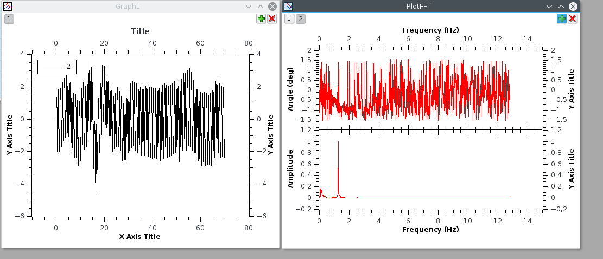
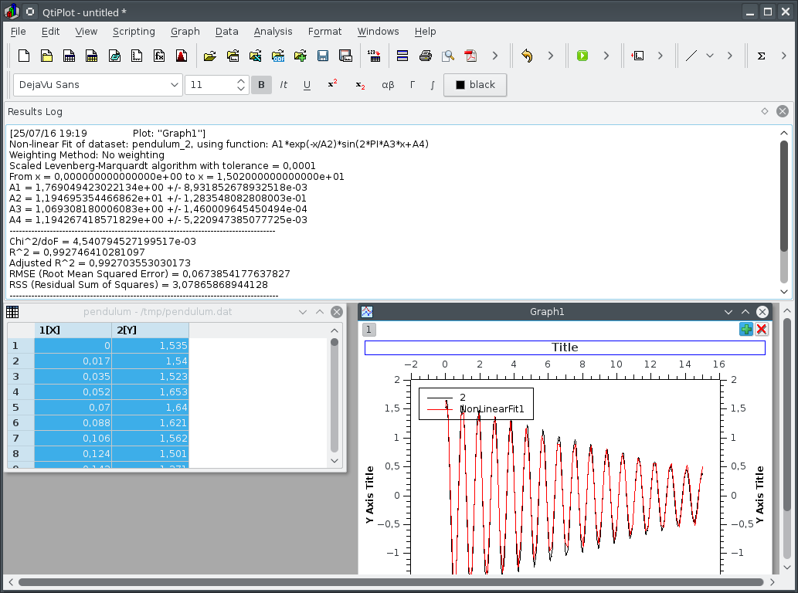

Affordable Measurement Box for Science
Table of Contents
- 1. Booting live USB sticks
- 2. Why should I use a live USB stick with free software?
- 3. First use of the expEYES box
- 4. Mastering Python
- 4.1. Empowering oneself with Python
- 4.2. A guide to learn Python quickly
- 4.3. Python libraries for science
- 4.4. Python libraries for graphic user interfaces
- 4.4.1. General purpose GUI libraries
- 4.4.2. GUI design programs
- 4.4.3. Our first GUI layout
- 4.4.4. Compiling the layout file to a Python program
- 4.4.5. Our first working program
- 4.4.6. Introducing some “meat” to replace nonsenses of the first program
- 4.4.7. Details of the first modification
- 4.4.8. A few more code, to deal with real life problems and exceptions
- 4.4.9. Exercises: improve our first program
1 Booting live USB sticks
1.1 We proudly choose an “Unsecure” system
Some laptop manufacturers are applying a new policy proposed by Microsoft: disallow users to boot freely their operating systems, verify that the system loaded during the boot process bears a cryptographic signature approved by Microsoft. This feature is known as “Secure Boot”, as presumabily operating systems can be considered as secure, only if they are made by Microsoft company.
So far, Microsoft company does not provide free/libre operating systems, and as we want to distribute live USB sticks which our students will be able to duplicate, understand, and even enhance, Microsoft Windows cannot be used. To have a more precise idea about the problem, let us take a look at the end-user agreement which comes with Windows 10:
(excerpt of https://www.microsoft.com/en-us/Useterms/OEM/Windows/10/UseTerms_OEM_Windows_10_English.htm)
- […]
- Installation and Use Rights.
- License. The software is licensed, not sold.[…]
- […]
- Restrictions. […] this license does not give you any right to, and you may not: (i) use or virtualize features of the software separately; (ii) publish, copy (other than the permitted backup copy), rent, lease, or lend the software; […] (vi) reverse engineer, decompile, or disassemble the software, or attempt to do so […]
1.1.1 To sum it up:
- the software is licensed, not sold: it can be free as free beer, but as we shall see further, it is not free as in freedom.
- students (and teachers) are not allowed to publish, neither to distribute copies of the operating system. Even if this may be technically feasible, one can be sued if she does it.
- students (and teachers) will never be allowed to understand how the operating system works. Its source is not published, and attempts to reverse engineer its binaries are forbidden by license.
1.1.2 So to sum up the summary:
| AS WE WANT OUR STUDENTS TO BE ABLE TO UNDERSTAND |
| WHAT THEY USE AND WHAT THEY DO, |
| WE MUST DEFINITELY OPT FOR UNSECURE SYSTEMS. |
1.2 Disabling the “Secure Boot” feature
Until year 2015, vendors who wanted to apply the “Approved by Microsoft” sticker on their laptop had to enforce the “Secure Boot” feature by default, but they used to let a possibility for the users to disable this feature, more or less easily.
More recently, vendors who want to get this sticker are encouraged to remove the possibility of disabling the “Secure Boot” feature. Depending on anti-trust law which apply in such or such country, this removal can be considered legal or not. However, one can now find laptops which are difficult to boot without the “Secure Boot” feature.
Here are hints provided by Microsoft Company, about disabling the “Secure Boot” feature (source: https://msdn.microsoft.com/en-us/windows/hardware/commercialize/manufacture/desktop/disabling-secure-boot)
1.2.1 To disable Secure Boot:
Before disabling Secure Boot, consider whether it is necessary. From time to time, your manufacturer may update the list of trusted hardware, drivers, and operating systems for your PC. To check for updates, go to Windows Update, or check your manufacturer’s website.
Open the PC BIOS menu. You can often access this menu by pressing a key during the bootup sequence, such as F1, F2, F12, or Esc.
Or, from Windows, hold the Shift key while selecting Restart. Go to Troubleshoot > Advanced Options: UEFI Firmware Settings.
Find the Secure Boot setting, and if possible, set it to Disabled. This option is usually in either the Security tab, the Boot tab, or the Authentication tab.
Save changes and exit. The PC reboots.
Install the graphics card, hardware, or operating system that’s not compatible with Secure Boot.
In some cases, you may need to change other settings in the firmware, such as enabling a Compatibility Support Module (CSM) to support legacy BIOS operating systems. To use a CSM, you may also need to reformat the hard drive using the Master Boot Record (MBR) format, and then reinstall Windows. For more info, see Windows Setup: Installing using the MBR or GPT partition style.
If you’re using Windows 8.1, you may see a watermark on the desktop alerting you that Secure Boot is not configured correctly. Get this update to remove the Secure Boot desktop watermark.
1.3 Now our system is ready, let’s boot with the USB stick
When possible, alongside with the “Secure Boot” option tweak, you can choose the order of bootable devices. If the live USB stick is plugged in, you may reorder boot methods so the USB stick is considered as prioritary (before the boot on hard disk, and before the boot on network interface). If you could define the USB stick as a prioritary boot medium, just keep it plugged in while booting.
If you could not define the default boot sequence order, you can choose the boot medium on the fly: on most laptops, the key “F8” (or F9, or F12) is dedicated at this purpose. If the key is activated during the early boot process, you are given the choice between a few boot options in the so-called “boot menu”. Choose your USB stick, and press “Enter”.
When the system can boot from the USB stick, and if the graphic card of the laptop is VESA compatible, you will see a welcome splash screen provided by GRUB (GRand UNified Bootloader), with a few options selectable by keyboard’s arrow keys. Usually, you just need to wait a few seconds, or you can type “Enter” to select the first entry. Then the boot process begins, and you can see a few messages on the screen, during the hardware check-up. One minute later, the graphic desktop should be usable.
The main menu (applications, settings, etc.) lies in the left bottom corner, you can begin exploring it. When an Ethernet cable is plugged in, the automatic configuration of network access is attempted, and chances are that you begin with a usable network configuration. There is also a possibility to get network access thanks to WIFI hotspots if any.
2 Why should I use a live USB stick with free software?
2.1 Ten reasons why live USB sticks are good:
The following set of reasons is non-exhaustive!
- I can get an efficient system with a USB stick weighing 8GB. This is quite affordable. About one half of the storage space is used for the operating system and programs; the second half is available for the “payload”;
- When I am travelling, or just going from place to place, all I need can fit in my pocket;
- As far as I want to keep my USB stick private, I know that no spy program hosted by the local computer will access my data;
- Duplicating a USB stick (and all of its features) is a matter of a quarter of an hour;
- With the KNOPPIX-based live system, I can also duplicate the operating system and the programs without disclosing private data;
- When used in an educational context, USB live sticks provide an interesting feature: students can replay an exercise, or finish it outside the classroom, with exactly the same software environment they were using previously;
- A live USB stick can be used to boot a computer when it cannot boot on its hard disk for any reason; it is a valuable rescue system;
- A live USB stick can survive in a washing machine; a computer cannot;
- A live USB stick can survive strong accelerations, like falling downstairs; a computer cannot;
- Small is beautiful (see figure 1).
Figure 1: Don’t keep more in your pocket
2.2 Ten reasons why free software and open formats will be preferred:
- Free software is defined by a list of four elementary freedoms,
- the freedom to use the software in any case (for example, not only in educational context);
- the freedom to learn how the software functions. That implies an access to its source code;
- the freedom to make derivative works based on the software;
- the freedom to copy and distribute the software, either in its original form or as a derivative work;
- As, with the definition above, there is no limitation of use (the software does not need to be shared costlessly), people can earn their life when working with free software;
- As the source of the software must be delivered with it, fair interactions can be organized between competitors; every company can access specifications about open formats being used; however, competitors cannot build their wealth upon secrecy; the cost of the software must be justified by its quality;
- As the source of the software must be transmitted along, the software becomes “eternal”, in the sense that you can always hire a skilled person to adapt the software and maintain it if a previous author or vendor fails to do it;
- Free software can be audited for security issues by specialists, who can know details of its design by studying its source; if a security issue is detected, it can be fixed by the same people;
- When the source of the software is written in a “human readable” form, one can check that there is no spyware included;
- When the software is used to make science (or to teach science), it is not a “black box”; everyone may watch its internals, and experiments can be readily reproduced;
- When there is no constraint on copies or instances of a running software, license management is way cheaper;
- The ability for everyone to access the source of the software is a strong incentive for progress and software quality;
- Most non-free software from the last ten years is now dead; on the contrary, free software, even when it is old, can be revived with some work; the same is true with data which were saved in non-open formats, if nobody took the opportunity to convert them to a new format when it was still possible.
2.3 Why would my students like to use copies of my live USB stick?
Here are a few “irrational reasons” why my students like my system based on a live USB stick:
- Thanks to Klaus Knopper’s efforts, every derivative of KNOPPIX comes with an excellent support of accelerated graphic cards, and the desktop is managed by Compiz. If you do not know what Compiz provides, you cannot understand why your students are playing with dozens of applications open in separate windows, like jugglers with their balls.
- Creating awesome graphics is a matter of seconds; open Gimp, then File → Create → Logos → (choose a style) → (type your logos’s text) → click, et voilà!
- They can cheat when preparing their homework! For example, the application wxMaxima allows them to find immediately the roots of most equations. Of course, when students “begin to cheat”, the teacher just needs to propose them more creative assignments: they become able to solve problems which are usually thought as out of their reach at their education level.
And now, here here is at least one “rational reason” why my students do use my system based on a live USB stick:
- They are assigned homework which can precisely be done with the help of that live USB stick.
3 First use of the expEYES box
3.1 Pickup voltage: where does it come from?
Figure 2: Main window of expEYES-Jr features an oscilloscope screen
Boot your computer with the live USB stick; bind the expEYES Jr box to the
computer with a USB cable, launch the application expEYES Junior (probably
a menu item under Education → Science). The window which appears should bear
a mention to the detected hardware in its title bar, and feature an oscilloscope
screen with one track enabled. In figure 2, one can read “Four
Channel CRO+ found expEYES-Junior on /dev/ttyACM0”, which means that the
application “CRO+” (an enhanced Cathode-Ray Oscilloscope) has detected the box
named expEYES-Junior, via the serial port known as /dev/ttyACM0.
Take an insulated wired in your hand (do not touch directly the metal), and touch the analogic input A1 with the bare end of the wire. The track on the oscilloscope screen should change a little. Then change the duration of the sampled data set, by dragging the slider “ms/div” to the right (this slider is on the left of the window, just below the list of channels CH1 … CH4). When the duration of the sweep is well tuned, you shall see a few wave periods in the oscilloscope’s screen.
Figure 3: Pickup voltage, time sweep: 5 ms/div
Click the “Save Traces to” button: a file named cro.txt (or some other name if you
change the default) will be written. You can take a look at this file, with
various tools. Try to open the file with the following applications:
- inside a Terminal, type the command
cat cro.txt(and type “Enter”): you will be provided many lines of text, which you can scroll up and down with the vertical slider of the terminal. The commandcatis a very simple command: it opens one or more files given as arguments, and concatenates their contents to the standard output, which is the terminal’s display in that case. - inside the same terminal, type the command
less cro.txt(and type “Enter”): you will be provided the same set of lines, but you are using a so-called “pager” (the commandlesscalls the default pager of the system). You can access previous and following lines by using vertical arrow keys, or Page-Up Page-Down keys. Type “Q” to stop the pager program and come back to the terminal’s prompt. - launch the application Qtiplot (probably available under the menu Education
→ Science). Then, import data from the file
cro.txt: Window’s Menu → File → Import → import an ASCII file, or quicker with the graphic button which does the same (an icon with “123” written above), or else with the keyboard shortcut Ctrl+K. Chose the right file, import it. If numbers are not well imported, you may want to change some import options, like the number’s input format. The values from the filecro.txtwill be displaied in a data grid. You can select both columns with the mouse, then plot the data easily (either by calling a contextual menu by a right click, or by using the “Plot” window’s menu). The application Qtiplot has many features to analyze data series, which deserve a detailed study. - you can also import the data with LibreOffice’s spreadsheet program, known as
calc. When data are there, other features of the spreadsheet can be enjoied.
Figure 4: The same data, accessed by “cat”, “less” and “qtiplot”
While maintaining the right sampling settings, use the left mouse button to drag the symbol “CH1” to the symbol “FIT” in the left part of the screen. The application will begin to fit the sampled data with a template function based on a sinus. The amplitude and the frequency should appear in “real time” near the oscilloscope’s screen.
In order to reply to the title’s question, while maintaining the wire connected to the A1 input, one hand on the insulating part of the wire, move your body, or just a member, nearer or further from areas where you know that power lines are embedded. If the “FIT” feature is enabled, you may notice that the amplitude depends tightly on the proximity between your body and power lines, while the frequency remains mostly unchanged. One can read “A1: 0.19 V, 50.8 Hz” in the middle of the right part of the window, in figure 3.
Another question which is worth a short documentation search for students is “why precisely 50 Hz?”. Wikipedia’s web site gives valuable information about the history of that frequency standard.
3.2 experimenting with a few wires only
ExpEYES-Junior is a measurement box, but not only that: it is enhanced by
numerous generators. By the way, the program expeyes-junior comes with some
powerful features, like one-click Fourier transform.
3.2.1 Fourier transform, page 30 of the manual
As a first try, let us open the User Manual, page 30. It is a simple manipulation about Fourier transforms, for a sinusoidal and for a square wave.
The manual says to use two wires, one from SINE to A1, the second from SQR1 to A2. I rather use four short wires with crocodile clips, and do the same by joining clips accordingly.
When the box is bound to the computer, and the wires are in place, please launch the program expeyes-junior. Figure 5 shows two oscilloscope tracks, we can see that SQR1 is enabled, with a frequency of 150 Hz.
The symbols A1 and A2 in the left column of the window have been dragged with the mouse and dropped on the symbols CH1 and CH2 respectively.
Figure 5: Two tracks of the oscilloscope are used, the frequency of both signals are quite the same
In order to get a Fourier transform of the signals, the manipulation is very simple: when you drag the symbol CH1 on the neighboring symbol FTR, you get a new window with figure 6, and when you drag CH2 on FTR, you get another window with figure 7. The fast Fourier transform is done quickly by the application. You can notice more peaks in the FFT plot of the square wave. The first peak is a frequency 0 (it is due to a non-null DC component), and other peaks are at frequencies which build an arithmetic progression.

Figure 6: Fourier transform of the SINE wave
Figure 7: Fourier transform of SQR1’s signal at 150 Hz
3.2.2 Using the MIC output
Install a wire (or two wires bound by crocodile clips) between the MIC socket,
which is the outpout of an amplified microphone, and A1, the first analog input.
Then, you must provide some “musical” sound near the microphone, which is placed
at the left bottom end of the expEYES box. For example, use some whistle, or
sing a single tune during a few seconds. Adjust the time sweep in order to have
a few waves in the oscilloscope’s display. Begin to drag the symbol CH1 above
the symbol FTR, and drop it when the oscilloscope’s track is well shaped. This
records data in two files: cro.dat, which contains original data resampled with
a time step which ensures that a good FFT can be done, and fft.dat, which is the
fast fourier transform of the same data to give a power vs. frequecy spectrum.
The figures 8 to 11 show data recorded,first with a voiced “AAA”, then with a mouth-wistled still tune of higher frequency.
Figure 8: A voiced “AAA”: the original signal
Figure 9: A voiced “AAA”: fast fourier transform
Figure 10: Mouth-whistled still tune: the original signal
Figure 11: Mouth-whistled still tune: fast fourier transform
Further is (figure 12) another analysis of a mouth-whistled tune, done
with the file cro.dat which was imported (as ASCII data) in the application
qtiplot. You can notice that the abscissa for frequency should be kHz (not Hz),
because the unit for time exported from expeyes-junior is millisecond, not
second.

Figure 12: Another mouth-whistled still tune, analyzed by qtiplot.
3.2.3 A “standalone” experiment, with the DC motor
The expEYES-Junior kit comes with a DC motor (which is ordinarily used to drive
a CDROM); this DC motor can act as a low voltage motor, but it is also an
efficient tachymeter, that is, an angular velocity probe: it outputs a voltage
which is proportional to its angular velocity, and as it has few internal
friction, it can be used to measure the movement of a pendulum. When the main
application expeyes-junior is running, click on the “EXPERIMENTS” button:
a submenu appears, where you must activate the entry named “Pendulum Waveform”.
The window of the main application remains in place, but it looses the control of the experiment box, which is given to a specialized application. To enjoy the secondary application, you must make the following connections:
- from inverting amplifier’s OUT plug to analog entry A1, with one wire;
- the motor’s wires are connected between the ground (GND), and the input (IN) of the inverting amplifier.
Then, you can check that the second application begins to record voltage data as soon as the motor has enough angular velocity.You can stop the record at any time with the “STOP” button.
Put the motor’s axis horizontal, near the edge of a table, and grasp firmly the motor’s body. Fit the motors’s axis to a pendulum; there are many ways to do it, all are correct, as long as most of the mass ofthe pendulum is far enough from the motor’s axis, and that the pendulum remains tightly fixed to the motor’s axis during oscillations.
Here are two easy and cheap solutions used by the author:
- either a metal pendulum coupled to the motor’s axis with a small and strong enough magnet,
- or a wood stick fastened to the motor’s axis with a screw for wood of diameter 2 mm, with some relatively heavy clip fastened at the other end of the stick, see figure 14.
When the motor is int good position, slowly put the pendulum far fromits equilibrium position, and let it go freely. The angular velocity probed by the motor goes quicly above the threshold which triggers the record’s begin. The record’s duration is 15 seconds by default (but you can change it). When the record is finished, you should click on two buttons, first “SAVE To”, later “FIT”. So, you get a file with the data recorded, for further analysis, and the FIT method gives you two interesting coefficients: the oscillation’s pseudo-frequency, and its damping coefficient; see figure 13.
The last figure of this section (15) shows the data from the file
pendulum.dat reworked with qtiplot’s analysis tools (Analysis → Fit Wizard
… define a user fit). You can see that the choosen formula is
\(A1 * \exp(-x/A2) * \sin(2 * \pi * A3 * x + A4)\); so, it is a damped sinusoidal
function, with damping coefficient \(A2\), frequency \(A3\), and phase \(A4\); \(A1\) is an
arbitrary multiplying factor. Initial values to perform the fit were \(A1=1.5\)
(the order of magnitude of the initial amplitude), \(A2=10\), as the movement is
significantly damped within 10 seconds, \(A3=1\) since the pseudo-frequency is
near \(1\, Hz\), and \(A4=1.5\) (which is near \(\pi/2\)). The fitting algorithm of qtiplot
yelds a damping factor \(A2=1.2\, s\) and a frequency \(A3=1.069\, Hz\), with an
excellent correlation factor: \(R^2=0.993\). The precision is greater for the
frequency than for the damping factor.
Figure 13: Record of a pendulum’s angular velocity
Figure 14: Pendulum made with a wood stick, a screw and a clip.

Figure 15: Reworking the data with qtiplot.
4 Mastering Python
Python is an interpreted computer language created by by Guido van Rossum at Centrum Wiskunde & Informatica (CWI) in the Netherlands, fifteen years ago approximately. Currently thislanguage is considered as excellent for dealing with scientific and experimental data, and most important software libraries which can be used it that area have been llinked to Python and areexposing well-documented Programming Interfaces.
4.1 Empowering oneself with Python
Archimedes said “Give me a place to stand and with a lever I will move the whole world”. He was probably thinking about Python ;).
Computers come now with unprecedented arithmetic power, and there are clever programs which make it usable for calculus also. Of course, students must know how to make operations by themselves, but when thousands of calculations are necessary, controlling a computer is the solution. Python is one of the shortest ways to control this power.
Incidentally, the way Python programs must be written makes them often quite readable by non-aware people. I could discuss with a teacher of philosophy who showed me a source program and pointed one precise part, saying “there is an error, right there!”.
4.2 A guide to learn Python quickly
4.2.1 Level of difficulty
Learning to walk with one’s legs is a non-trivial task, most humans achieve it in their early youth. Driving a helicopter is also a non-trivial task, but few humans achieve it, even if it might give them huge advantages. There are reasons why few persons can learn to drive a helicopter: the learning environment is very expensive, and also somewhat risky: a beginner can destroy a helicopter and herself in the same run with some probability.
Learning arithmetic operations is also a tough task, which most persons achieve in developed countries. Controlling a computer, compared to basic arithmetics, is quite like driving a helicopter, compared to walking. However, unlike the helicopter example, it is much safer: Python is a free-libre program, you can get it gratuitously; accidentally breaking a computer while learning computer science with Python is most unlikely.
In a few words, the best guide to learn Python quickly is your own curiosity, as long as you choose a project which makes sense. Good tutorials exist in many places, here is the tutorial of the Python Fundation: https://docs.python.org/3/tutorial/index.html.
Currently, there are two families in the Python language, known as Python2 and Python3; the fork between both families has begun a few years ago. If you are beginning, you should definitely learn Python3, as it is the only branch which will be maintained and developed in the future, even if many efforts are still deployed to help the large community of people who are still using Python2.
4.2.2 Examples of small projects which can be used to learn Python
- Repeat writing the same line of text many times
- Write lines of text made of some character, for example a star (*), which will build some interesting shape when watched from some distance: a ball, a robot, a toy, a pet, etc.
- Produce automatically arithmetic tables: for addition, multiplication, etc. and why not, logarithms too?
- Create some interactive game: the computer asks a question, the player replies, the further exchanges depend on the replies, etc. For instance, the computer chooses a random number within a range, and the player has a limited number of questions left to know which it is …
- Draw an elephant, which will cross the screen, coming from the left and going to the right (or the opposite)
- Create a structure which can be used to manage your collection of music records, and two different routines to display collection’s items, with more or less details
- Create an interactive program which allows one to query your collection’s items, based on search criteria (author, publisher, duration, music style, etc.)
- Write a program which quickly solves equations of degree one, two … three, four (if you dare to go that far)
- Write a program able to say how many different colors there are in a picture
- Write a program which automatically detects a human face in a given picture
4.2.3 Python and expEYES
Your computer does not work in “real time”: that means that when you begin some task, you cannot require with certitude a precise duration for that task to complete. For example, if you want your computer to measure a thousand times the voltage of a precise pin during one second, you cannot be sure that it will perform this operation uninterrupted.
This is why the physical measurements are done inside expEYES box with a separate program designed to work in real time. Then, your computer can ask the box to make the thousand measurements, they will be done uninterrupted. Later, the results will be given back to your computer, possibly with some interruptions, but you are sure that the data were captured on a regular time basis. As the computer, despite its many interruptions, works very very fast, you experience a rich feedback, not unlike the feeling you can have with an oscilloscope. However, because of its calculation capability, your computer can go way further than an oscilloscope, and this is why Python is used, to enjoy the many libraries which can crunch numbers for us.
Now, let us begin with Python+expEYES: let us open the application geany (a
good development environment for programmers… Windows users will probably use
Notepad++), and type the few lines presented in figure 16. Then, save them
with the filename p1.py. As soon as the name of the file is defined, geany will use
colors and styles to make the syntax of the source file more evident. For
example, key words like import, print, are displaid in a particular fashion.
Figure 16: Our first program with Python+expEYES ever.
When the file is saved, press the “F5” key (it is a shortcut to launch
the program which has been edited). You will get a heap of numbers written in
a Terminal, and you will be prompted to press the “Enter” key. When you press
it, the Terminal is closed. The series of numbers were a sequence of voltages
measured very fast on the analog input A1. If you want more variety inside this
sequence of numbers, you can connect a wire to this input and act exactly as for
the previous experiment "Pickup voltage". The number sequence can be impressive,
but it not as expressive as a good plot. In order to make a plot, you need three
more lines in the program. Save the previous program with a new file name, like
p2.py. So, the first program still exists and can be used as a begin point for
other variations. Then add three more lines, as showed in figure
17. Save the program and type “F5”. If there is some “pickup voltage”, you
should get a plot like in figure 18.
Figure 17: The second program with Python+expEYES.
Figure 18: The plot given by the second program
You can notice that the plot comes in a separate window which has its own close button, and that you will have to close the Terminal too after the end of the program.
4.2.4 Understanding the first programs for Python+expEYES
Let us comment the few lines in the program p1.py:
import expeyes.eyesj- this declares that the library which drives expEYES-Junior will be used; the library’s name is expeyes.eyesj, if we want a shorter alias, it is possible to declare it, more about that later …
- p=expeyes.eyesj.open()
- this line calls the function
open()from the library which drives expEYES-Junior, and the resulting object is stored into the variablep; hence,pcontains the intialized driver to deal with the measurement box. - t, v=p.capture(1,100,2000)
- this line calls the method
capture()from the driver, with three parameters:1is the number of the input channel;1stands for channel A1100is the number of samples to collect: a hundred of measurements are requested2000is the duration between two consecutive measurements: measurements will be done every \(2000\, ns = 2\, \mu s\); so the total duration of the “experiment” is requested to be \(200\, \mu s\). The results are assigned to variablestandv,tis the list of timestamps,vis the liste of measured voltages.
print(v)- this line asks to print the hundred values measured in the standard output of the program, which is the Terminal, there.
Now let us comment the new lines in the program p2.py:
import expeyes.eyesj as ej- exactly the same as in
p1.py, but the aliasejwill be used to name the library. from pylab import *- this line means that every objects and functions of the
library
pylabwill be available directly in the program. Such an instruction may cause problems if two libraries provide same names for different functions. Here there will be no problem because the program is very short. The functions which will be used areplot()andshow(). - p=ej.open()
- exactly the same as in
p1.py, you can notice that the aliasejis used there. - plot(t,v)
- this is the call to a function provided by the library
pylab, it builds a very simple plot with the series of valuestas abscissa and the series of valuesvas ordinate. show()- this call creates a graphic window to contain the plot, and allow users to interact with it. This window “lives” independently of the main program.
4.2.5 Proposition of exercises
as you can see, the plot in figure 17 is not very precise, and some features of the expected waveform are not as detailed as they might be. You can make a series of exercises, in order to:
- make more measurements, in the same total time
- make a longer measurement, with more samples but same laps of time
You can also try to find the limits of the measurement box:
- which is the shortest duration between two consecutive measurements?
- how many measurements can be stored in the box for a one-shot measurement series?
- how many different inputs has the box, which numbers are they assigned?
- etc.
4.3 Python libraries for science
As we already know, Python exists for fifteen years approximately, and most important free and open-sourcelibraries have been made available for Python, thanks to a versatile toolset which allows one to link C and C++ libraries to Python language.
You can access a good review about Python Libraries for Science at https://wiki.python.org/moin/NumericAndScientific. Here are the two first entries of this webpage, as captured in August 2016:
- NumPy
- http://www.numpy.org/ – Numerical Python adds a fast, compact, multidimensional array facility to Python. […]
- SciPy
- http://www.scipy.org/ SciPy is an open source library of scientific tools for Python. SciPy supplements the popular NumPy module, gathering a variety of high level science and engineering modules together as a single package. SciPy includes modules for linear algebra, optimization, integration, special functions, signal and image processing, statistics, genetic algorithms, ODE solvers, and others.
4.3.1 numpy: the advantage of using arrays vs. plain Python lists
When one uses plain Python, she can manipulate series of numbers as so-called
lists: for example the 10 first even integers are this Python list:
[0,2,4,6,8,10,12,14,16,18]; such a list can have a memory footprint bigger than
ten times the place necessary to store an integer, because Python lists can
contain any type of element (for example, a list can contain another list), and
such a flexibility requires more memory space and sometimes slower algorithms to
take in account all the possibilities.
The module numpy allows you to declare or to construct numeric arrays, which contain only numbers, and which can be computed efficiently. The figure 19 shows the code to get the same numbers as above in an array.
The arange function allows us to build very easily long arithmetic
series. For example arange(0,2,1e-3) yelds an array of two thousand numbers.
Numpy provides also mathematic functions and operators which work directly on arrays; here are two example programs, in figures 19 and 20.
Both compute y=2*x and z=sin(x) for any element of an arithmetic series, we can
notice that numpy allows us to use a more clear programming style!
Figure 19: some math with number series, without numpy
Figure 20: some math with number series, and numpy
4.4 Python libraries for graphic user interfaces
Some Python modules used for science can provide good tools for user
interaction: for example, the module pylab provides two functions, plot() and
show() which are very handy to get a simple plot in an interactive window: users
can zoom in some part of the plot, and save it in a file, etc.
4.4.1 General purpose GUI libraries
However user interfaces must often contain some controls to let the user trigger a physic interaction, or to launch some process on captured data. So, general purpose GUI (Graphic User Interface) modules are useful. A good GUI library allows one to internationalize easily a program, making it usable by wide communities. Additionnally, good GUI libraries inherit knowledge about human-machine interaction, and the author of programs can focus her attention about things which really matter for the end user: creating an intuitive interface, i.e. reusing popular widgets with well-known behaviors, defining contextual help phrases, making the current status well understandable, etc.
One good practice is to develop separately the user interface’s layout and the program’s processes which do the “backoffice work”.
4.4.2 GUI design programs
Some popular GUI libraries come with a specialized application to design the GUI
layout. For Gnome Toolkit libraries (Gtk), it is known as glade; we shall
make some exercises below with designer, which goes with Qt. Both Gtk and Qt
libraries work well with Python, and they can target a wide list of platforms,
ranging from desktop and laptop computers with various operating systems, to
mobile devices.
4.4.3 Our first GUI layout
Let us create our first GUI layout with designer, which will feature:
- one area to plot scientific data
- one button to launch a specific process
- one button to quit the application.
To begin with, the appplication designer must be launched without any option. So
it will display a menu and we shall choose the Main Window item. An empty Main
Window prototype appears in the center of the screen, collections of widgets are
proposed in a column at the left side.
Scroll down this column, select the widget known as QwtPlot which is part of the
“Qwt widgets” family, and drag its icon to the top of the Main Window prototype.
Then scroll up the widget column, select a Horizontal layout widget, and drag it
onto the Main Window, drop it below the QwtPlot footprint. Then, you must drag
and drop two Push Button widgets onto the Horizontal Layout. The first one is
easily dropped. In order to get a usable structure, the second one must be
dropped when a dark blue line appears on the west or on the east border of the
Horizontal Layout, meaning that the second button will be organized horizontally
either on the right or on the left of the previous button. If you want the
buttons to be packed on the right, you can drag and drop a Horizontal Spacer
widget at the east border of the Horizontal layout. Then, click on some free
area of the Main Window to select it, and click on the “Vertical Layout” tool
button, in the upper part of the window, just below the menus. This will
organize all of the Main Window.
Finally, save your work (File → Save) with some filename like p1.ui
It is better to add more attributes to the push buttons. Click on the left push
button to select it, then browse its attributes in the middle of the right
column of designer’s window. There, you should modify the button’s name to
“measureButton” (QObject → objectName) and its label to “Measure”
(QAbstractButton → text). Select the right push button, and make similar
modifications: its name should be “closeButton” and its label should be “Close”.
Save you work again. It is finished, you can close the application designer.
The suffix .ui of the saved file means that this a file to describe the layout
of the GUI in an open format. More than an application is able to read and to
interpret this format efficiently and to compose a sensible user interface.
4.4.4 Compiling the layout file to a Python program
- Open a Terminal, ensure that the default directory contains the recently made
p1.uifile, type the command linepyuic4 p1.ui -o UI_p1.py, and hit the Enter key. This will create a new file in Python language with the nameUI_p1.py. - Open that last file with a source editor, go to the end, and make
a small change to the last line: instead of
from qwt_plot import QwtPlot, this line should contain:from qwt import QwtPlot, to comply with the name of the module inside a Debian distribution (I assume that we are working with the USB live stick). This second operation should not be necessary, it is just implied by a small bug in the debian package ofpyuic4, the convertor fromdesigner’s.uiformat to Python source.
4.4.5 Our first working program
Here is our first program which will rely upon the just created user
interface. The series of snapshots (taken from geany’s buffers) has a few
comments.
Figure 21: Program’s header with inclusion of modules and definition of our custom Main Window
Figure 22: The constructor of our custom window: mandatory part
Figure 23: The constructor of our custom window: custom part
Figure 24: our custom window’s “measure” method
Figure 25: footer of the program: what to do if it is called as a main program
You cannot copy and paste the screenshots, however the complete program p1.py
can be downloaded from a Github.com repository.
Download the file (p1.py) and open it in a good editor to check its content. It
should work easily. For example, you can launch it by typing python3 p1.py and
hitting the Enter key, provided the default directory of the Terminal contains
p1.py.
Don’t be afraid by this program! Obviously, seventy lines in a language which you do not master currently can be an issue, but they are less an issue if you consider that you can freely copy this program source, and that you become really productive, just by modifying small details inside its structure. For example, take a look at lines 56 -68: they are there like a placeholder, for some useful program which you want to write. Plotting a function with random values is quite a nonsense, but it will become far from a nonsense if you replace those lines by a program to plot captured physical measurements.
4.4.6 Introducing some “meat” to replace nonsenses of the first program
The two subsequent programs will show you how to make some sense with the previous program, by wisely replacing some of its structure.
You can download here the second program, named p2.py. The modified parts are:
- the program’s header, to include one more module
- the
__init__constructor, which initializes the expEYES Junior box - the
measuremethod, which captures physical data thanks to the box, and plots them
4.4.7 Details of the first modification
- modifications of the header part
The line
import expeyes.eyesj as ejallows us to control the expEYES Junior measurement box from Python. - modifications of the constructor
The single line
self.p = ej.open()attaches expEYES’ driver object to the main window. - modifications of the
measuremethodOnly two lines are used:
t,v = self.p.capture(1,1000,200)to request a thousand voltage measurements, andself.curve.setData(t,v,len(t))to plot them.The conclusion is: that four lines of code are sufficient to turn a general-purpose GUI program into a usable scientific tool.
4.4.8 A few more code, to deal with real life problems and exceptions
The program p2.py works very well, with one exception: when no exPEYES Junior
box is connected to the computer, nothing happens as expected. If the program
was launched from a command line in a Terminal, you may notice error messages
appearing there. But if the program is launched by some other method, chances
are that it will not work, and the reasons why it doesn’t are not obvious for the
average user.
The designer of a program which touches physical realities must always keep a thought about what can go wrong; the most usual issue is a false connection, or no connection at all. Here we have an example: if the expEYES Junior box is not connected, the application should provide an a strong enough feedback for making the end user aware of the probable failure’s reason.
Fortunately, Python offers a nice structure to deal with exceptions: the
construct try: {some code which might trigger a failure} except: {someting to
do if the failure was triggered}. You must write two blocks of code, the first
one is governed by the keyword try:, and it must raise an error (in the Python
sense) if anything goes wrong; the second one is governed by the keyword except:
and contain instructions to process if an error was raised in the previous
block.
Here you can download a third program, which can deal with mistaken connection to expEYES Junior (or any error reason which can fool the detection of the hardware)
The differences between programs p2.py and p3.py are few:
- In the
try:clause, - the line
self.p = ej.open()is now embeded in thetry:block. A condition is tested just after this line:assert(self.p.fd)is an affirmation that the driver has a working file descriptor; unless this descriptor exists, a Python error is raised (you would see it if you write the same program line without thetry:block); if this descriptor exists, the next lines change the title of the Main Window. In most cases, this title will become “expEYES Junior found on port /dev/ttyACM0” - In the
except:clause, - there are two lines of code, to manage the exception.
The first one assigns the
Main Window’s title to “
ERROR: expEYES Junior NOT FOUND!”. The second one disables the button “Measure”, since this button should not be used to make measurements.
4.4.9 Exercises: improve our first program
Here are some exercise propositions, which can make you more fluent with GUI programming. Some are modifications touching just the user interface’s design, others touching the way captures are done, or are implementing additional features.
- Change the user interface file, replace the label “Measure” by some other label, like “Launch a capture”, for example
- Add a button to save data into a file named “data.csv”; verify that this file can be readily opened by other programs like LibreOffice Calc.
- Add a text input allowing end users to choose another file name
- Change the capture instruction, in order to get a thousand voltage values, separated by time gaps of two milliseconds; the total capture time should be two seconds
- Two seconds is quite a long time for our impatient students. Try to implement some way to provide a feedback message stating “Measuring voltage… please wait” from the click’s time until the plot’s update.
- Add a text input to let users request a precise number of voltage samples, so they can ask for as many samples as they want inside a reasonable range.
- Add text inputs to let users request other input channels than “A1”, and also to change the sample frequency
- Modify the widget used to request the measurement channel; replace it by a set of radio buttons, with labels “A1”, “A2”, “IN1”, “IN2”, “SEN”, etc.
- Change the set of radio buttons to a set of checkboxes, so users can select up to four of them, and up to four channels can be sampled simultaneously
- Provide a second plot widget, which will display the power spectrum of the signal (i.e. amplitude vs. frequency) after a Fast Fourier Transform